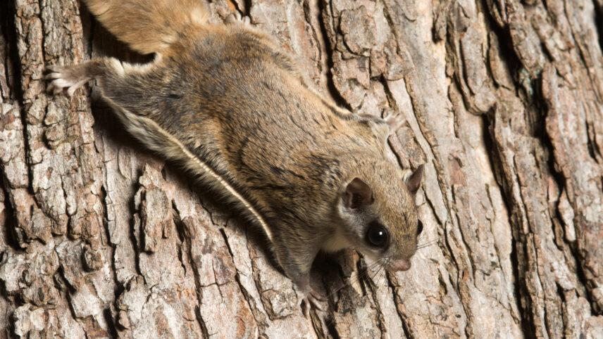
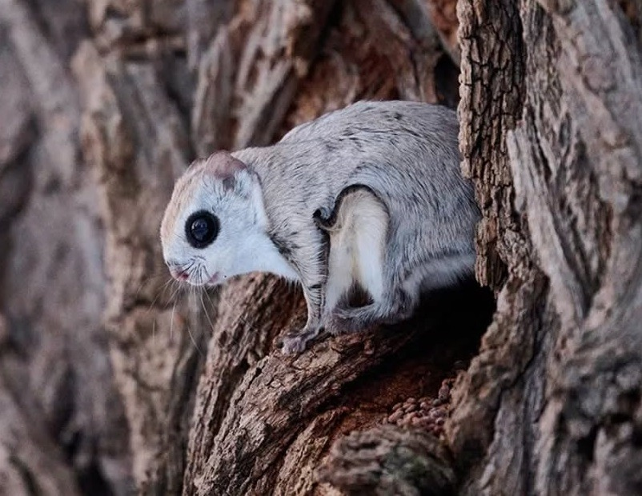
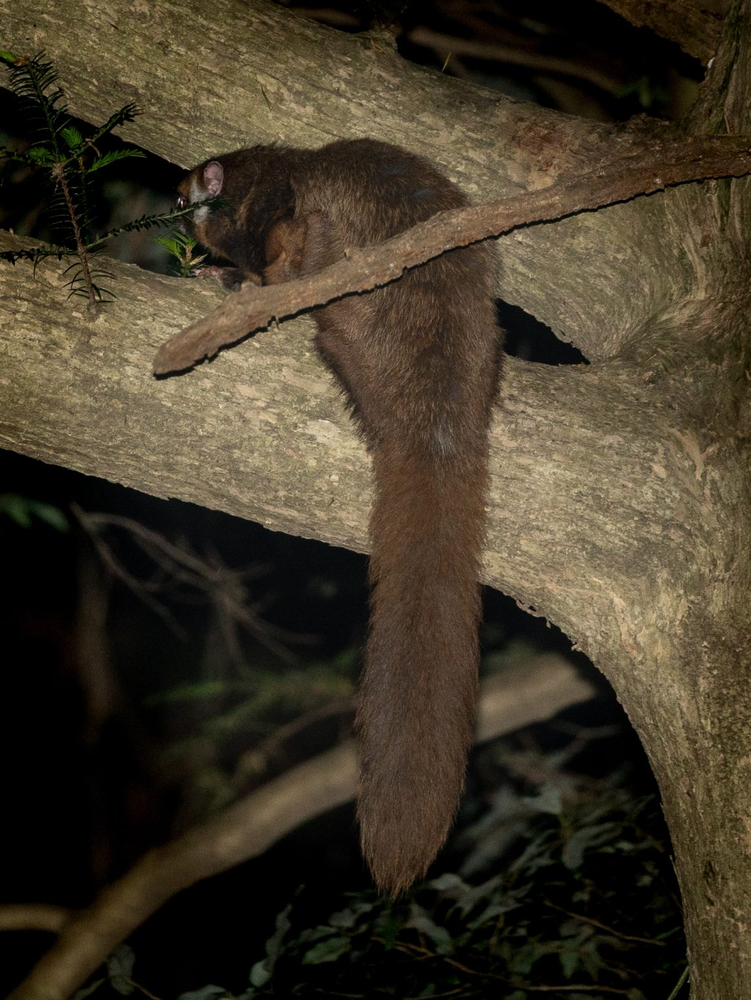
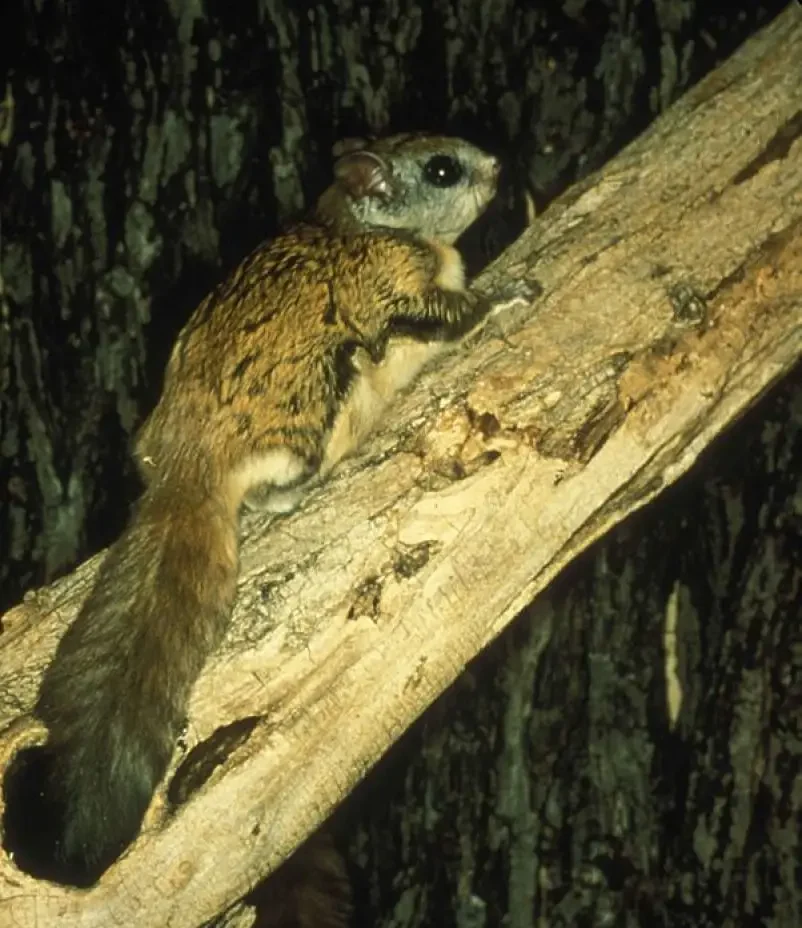
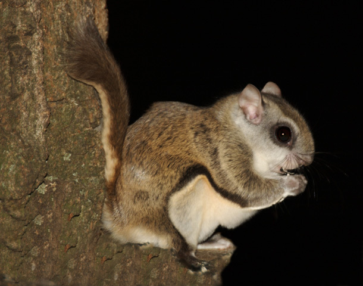
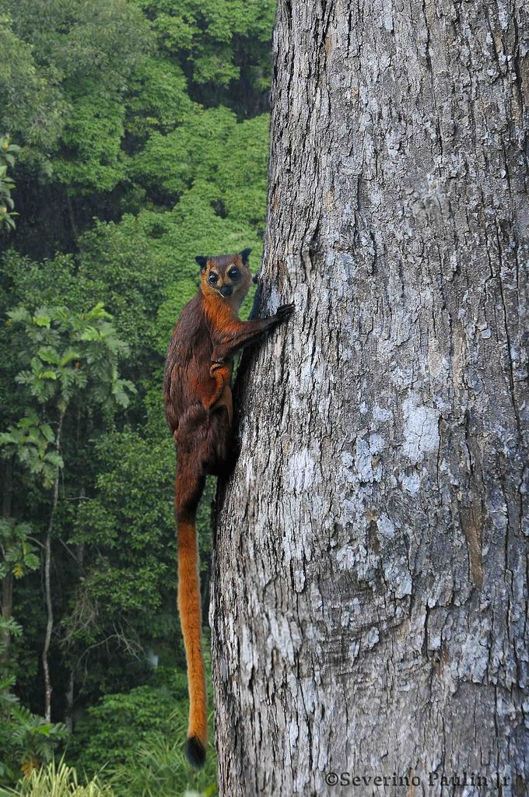
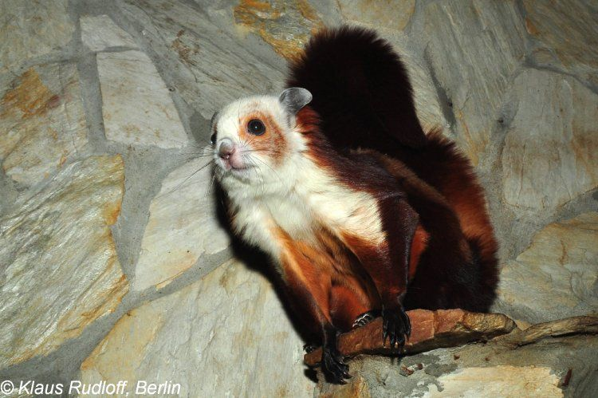

Tutvu erinevate lendoravaliikidega.

Harilikul lendoraval on tihe, pikk ja pehme karvkate. Seljakarv on beežikas, aga kõhualune on valge. Nad paiknevad okasmetsades, kus on palju vanu ja suurte õõnsustega puid, kuhu endale pesa ehitada. Sellele liigile on iseloomulikud suured mustad silmad. Ta keha on 12-22 cm pikk, jalad lühikesed ja saba lapik. Erinevalt paljudest teistest lendoravaliikidest, puudub tal lennunahk tagajäsemete ja saba vahel.

Jaapani väikelendorava kogupikkus on 12-22 cm ning ta saba on 10-12 cm pikk, ta kaalub kõige rohkem 220 grammi. Nende seljakarv on hõbehallist kuni beežikashallini ning kõhualune on kollakasvalge. Nagu harilikul lendoraval, puudub ka sellel liigil lennunahk tagajäsemete ja saba vahel. Selle liigi elupaigaks on põhjapoolsed okasmetsad. Nende pesad paiknevad puuoksa ja tüve ühenduskohas. Pesad on valmistatud samblast või samblikest ning asuvad enamasti mändidel või kuuskedel. Neil on võimalik kiskjate eest peita oma karvkattega, sest selle värvus sulandub nii hästi puukoore omaga, et nad muutuvad ümbritsevas keskkonnas peaaegu märkamatuks.

Jaapani hiidlendorav on väga suur, ta keha kogupikkus on 25-50 cm ja lisaks saba veel 30-40 cm. Ta kaalub 700-1500 kg. Lennunahk on tal tagajäsemete vahel, mille abil ta saab puude vahel liuelda. Lennu ajal kasutab ta saba tasakaalu hoidmiseks ja suuna kontrollimiseks. Nad suudavad liuelda järjest kuni 160 m. Neid leidub lähistroopilistes mägimetsades ja põhjapoolsetes okasmetsades. Aeg-ajalt võib neid kohata ka istandustes ja linnapiirkondades. Jaapani hiidlendorav on territoriaalne liik, eriti sigimisperidoodil. Emase kodupiirkond on 1 hektari suurune ja isasel 2 hektarit.

Põhja-lendorav on üsna pisike, keha kogupikkus on 27-34 cm ja ta kaalub 75-140 grammi. Tema karvkate on hallikaspruun, kõhualune hallikasbeež ning tal on suured mustad silmad ja roosad käpad. Nende jaoks on kõige sobivamad jahedad ja niisked vanad metsad, kus leidub rohkesti püstiseid surnud puid ja mahalangenud tüvesid. Nad püsivad aktiivsena ka madalate temperatuuride ja lumise ilma korral. Varjumiseks kasutab ta puuõõnsusi, lehtedest ehitatud pesi, maa-aluseid urge ning teiste lindude ja oravate mahajäetud pesi. Põhja-lendoravad on öise eluviisiga, kuid neid võib mõnikord kohata ka valgel ajal.

Lõuna-lendoravaid leidub kõige sagedamini parasvöötme ja soojema parasvöötme leht- ning segametsades. Lõuna-lendoraval on Mehhikost põhja poole jäävates metsades neli alamliiki: G. v. volans, G. v. texensis, G. v. saturatus ja G. v. querceti. Lisaks on Mehhiko ja Kesk-Ameerika mägipiirkondades leitud kuus eraldatud levialaga alamliiki: G. v. madrensis, G. v. herreranus, G. v. chontali, G. v. oaxacensis, G. v. goldmani, G. v. underwoodi. Kuna selle liigi leviala on väga lai, ei ole kogu liigi kohta kindlat asukohta määratletud. Ameerikast lõuna pool elavad alamliigid eelistavad sageli kõrgemal asuvaid piirkondi, näiteks mäestikke. Kuigi lõuna-lendoravad ei ole seotud ainult ühe kindla metsatüübiga, leidub neid sagedamini pöök-vahtra-, tamme-hikkori- ja paplimetsades. Pesitsemiseks kasutavad nad puuõõnsusi või lehtedest ehitatud pesi. Samuti eelistavad nad sageli pesitseda veekogust kuni 100 meetri kaugusel asuvates varjupaikades. Lõuna-lendorava kehapikkus on 20-28,5 cm ja kaalub 38-90 grammi. Tema saba on umbes 10 cm pikk. Tal on hallikaspruun karvkate ja kõhualune on valge kuni kreemikas, millega ta erineb põhja-lendoravast, kelle kõhualune on hall. Liike saab eristada ka suuruse põhjal. Põhja-lendorava kogupikkus on 27-34cm ning kehakaal 75-140 grammi. Seega on põhja-lendorav üldiselt lõuna-lendoravast suurem.

Punane hiidlendorav kuulub Kagu-Aasia suurimate lendoravate hulka. Ta kehapikkus on kuni 52 cm pikk ja sellele lisandub saba, mille pikkus on kuni 60 cm. Ta võib kaaluda kuni 3 kg. Ta on peamiselt öise eluviisiga ning elab põlismetsades. Ta suudab puude vahel liuelda kuni 100m. Punane hiidlendorav pesitseb puuõõnsustes. Tema toidulauale kuuluvad värsked lehed, mitmesugused metsaviljad ja seemned. Ta keha on jässakas ja tugev, saba aga pikk, kohev ning ristlõikelt ümar. Puhkeasendis ripub saba tavaliselt vabalt allapoole, kuid aktiivsuse korral võib ta kõverdada selle üle selja. Punase hiidlendorava levila ulatub India põhjaosast ja Nepalist läbi Lõuna-Hiina, Myanmari ja Tai Malaisia poolsaarele, Sumatrale, Jaavale ning Borneole. Singapuris võib liik olla kohalikult välja surnud, kuna teda pole seal nähtud alates 1986. aastast.

Punane-valge hiidlendorav on üks väga suurtest lendoravaliikidest. Tema keha kogupikkus on 35-58 cm ning saba pikkus 43-61,5 cm ja kaalub 1-2 kg. Tema karvkate on valdavalt tumepunane, roostepruun, beež ja valge. Liik elutseb metsades Mandri-Hiinas 800-3500 meetri kõrgusel ning Taiwanis 1200-3750 meetri kõrgusel merepinnast. Päeval magab punane-valge hiidlendorav puuõõnsustes ning väljub öösiti toitu otsima. Õeldakse, et ta suudab liugelda puude vahel mõnikord kuni 400m.